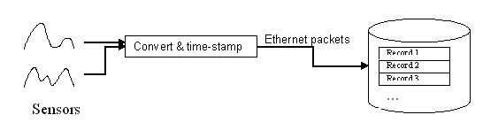

Last modified: 18 January 2012: Corrected links only.
Last modified: 13 March 2015: Removed mention of variable-length packet tables.
| HDF5 High Level APIs |
The proliferation of sensors and other instruments introduces enormous challenges to data management. Even for a single event, incoming synchronized time-sequenced data can have many sources, and the number of incoming data streams, as well as the types of data, can be large. In Boeing's flight test data applications, for instance, data arrives from test aircraft, voice communications, video, ground, satellite tracking, and other sources. This data must be gathered, integrated, processed, visualized, and archived. Similar scenarios exist for many different applications, such as environmental monitoring, vehicle testing, and medicine.
The collection and storing of these kinds of data historically have been reduced to unique in-house implementations. There is surprisingly little sharing of these infrastructure technologies even within an application area, let alone across application domains, resulting in frequent and costly re-invention of the same technologies.
HDF5 provides, in a single package, many of the capabilities that otherwise have to be developed from scratch. HDF5 can store virtually any kind of scientific or engineering data and to mix any number of objects of different types in a single container. HDF5 can support different access patterns, simplified data integration, datatype translation, fast I/O, and visualization and analysis software.
The following example describes the typical use of the HDF5 Packet Table API.
Writing homogeneous, fixed-sized packets of instrument data. An experimenter wants to store measurements from a fixed number of sensors. All measurements taken at the same time are collected and transmitted in a "packet", including a time stamp. The packet contents are to be saved as a record in a table. (Figure 1.) To do this, the experimenter can create an HDF5 datatype representing a fixed-size "packet" of data in an HDF5 file. This can be any atomic HDF5 datatype, or it could be a compound datatype. Each packet corresponds to a fixed-length horizontal entry, or "record," in a table.
|  |
| Figure 1. Fixed length packet example. |
Boeing's Flight Test Instrumentations Group and the HDF5 development group at the University of Illinois have developed a library that is particularly suited for "packet" data, data that arrives in streams of packets from instruments at potentially very high speeds.
A key to a general-purpose packet I/O library is that, at a certain level, all packet data falls into simple structural categories that can be handled by fixed-length packets. In this scenario, every record to be stored is of the same length.
The Packet Table implementation includes a C API, as well as prototype C++ wrapper objects, which are described in the Packet Table Reference Manual.
HDF5 "Table" vs. "Packet" APIs. The HDF5 packet API is similar to but separate from the HDF5 "Table" API, whose prefix is H5TB. The H5TB Table is designed to be as high-level as possible, adding attributes and abstracting away much of HDF5's internal workings. In contrast, the Packet Table API, whose prefix is H5PT, is a lower-level approach, designed to maximize throughput (as is needed in real-time applications). The Packet Table thus provides bare-bones table functionality with essentially no overhead.
Packet Tables have states, and must be opened and closed like HDF5 objects. Thus the Packet Table programming model is similar to that for working with other types of HDF5 objects:
The Packet Table API covers steps 3-5. See the HDF5 documentation for information on how to do the other steps.
The following operations can be performed on Packet Tables:
Packet Table APIs implement those operations. Full descriptions of Packet Table APIs can be found on the H5PT: HDF5 Packet Table page of the HDF5 Reference Manual.
The example below demonstrates the use of the C language version of the Packet Table API to create a packet table with fixed-length records and to perform writes and reads. (C sample program) (C++ sample program)
#include "H5PT.h"
#include <stdlib.h>
/*-------------------------------------------------------------------------
* Packet Table Fixed-Length Example
*
* Example program that creates a packet table and performs
* writes and reads.
*
*-------------------------------------------------------------------------
*/
int main(void)
{
hid_t fid; /* File identifier */
hid_t ptable; /* Packet table identifier */
herr_t err; /* Function return status */
hsize_t count; /* Number of records in the table */
int x; /* Loop variable */
/* Buffers to hold data */
int writeBuffer[5];
int readBuffer[5];
/* Initialize buffers */
for(x=0; x<5; x++)
{
writeBuffer[x]=x;
readBuffer[x] = -1;
}
/* Create a file using default properties */
fid=H5Fcreate("packet_table_FLexample.h5",H5F_ACC_TRUNC,H5P_DEFAULT,H5P_DEFAULT);
/* Create a fixed-length packet table within the file */
/* This table's "packets" will be simple integers. */
ptable = H5PTcreate_fl(fid, "Packet Test Dataset", H5T_NATIVE_INT, 1);
if(ptable == H5I_INVALID_HID)
goto out;
/* Write one packet to the packet table */
err = H5PTappend(ptable, 1, &(writeBuffer[0]) );
if(err < 0)
goto out;
/* Write several packets to the packet table */
err = H5PTappend(ptable, 4, &(writeBuffer[1]) );
if(err < 0)
goto out;
/* Get the number of packets in the packet table. This should be five. */
err = H5PTget_num_packets(ptable, &count);
if(err < 0)
goto out;
printf("Number of packets in packet table after five appends: %d\n", count);
/* Initialize packet table's "current record" */
err = H5PTcreate_index(ptable);
if(err < 0)
goto out;
/* Iterate through packets, read each one back */
for(x=0; x<5; x++)
{
err = H5PTget_next(ptable, 1, &(readBuffer[x]) );
if(err < 0)
goto out;
printf("Packet %d's value is %d\n", x, readBuffer[x]);
}
/* Close the packet table */
err = H5PTclose(ptable);
if(err < 0)
goto out;
/* Close the file */
H5Fclose(fid);
return 0;
out: /* An error has occurred. Clean up and exit. */
H5PTclose(ptable);
H5Fclose(fid);
return -1;
}
|
The HDF Group Help Desk: Last modified: 18 January 2012: Corrected links only. Last modified: 13 March 2015: Removed mention of variable-length packet tables. |